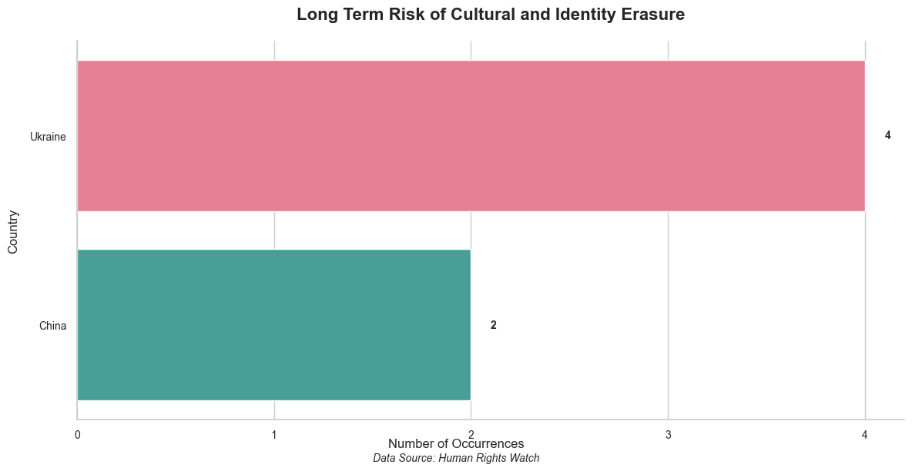
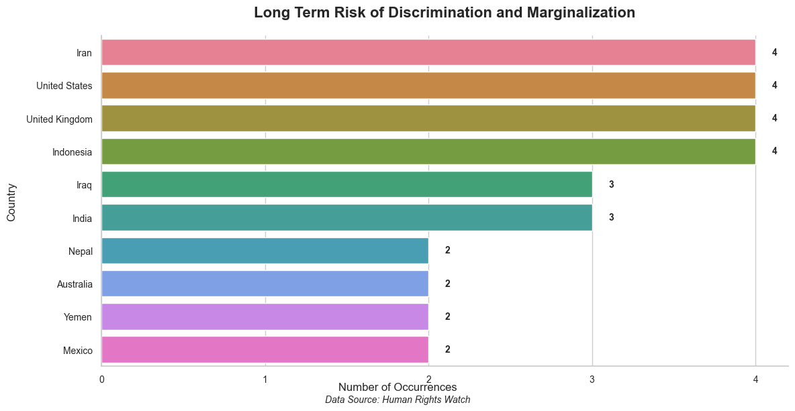
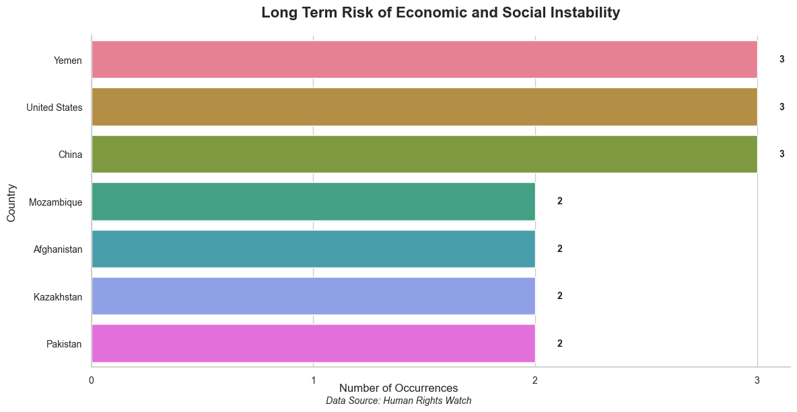
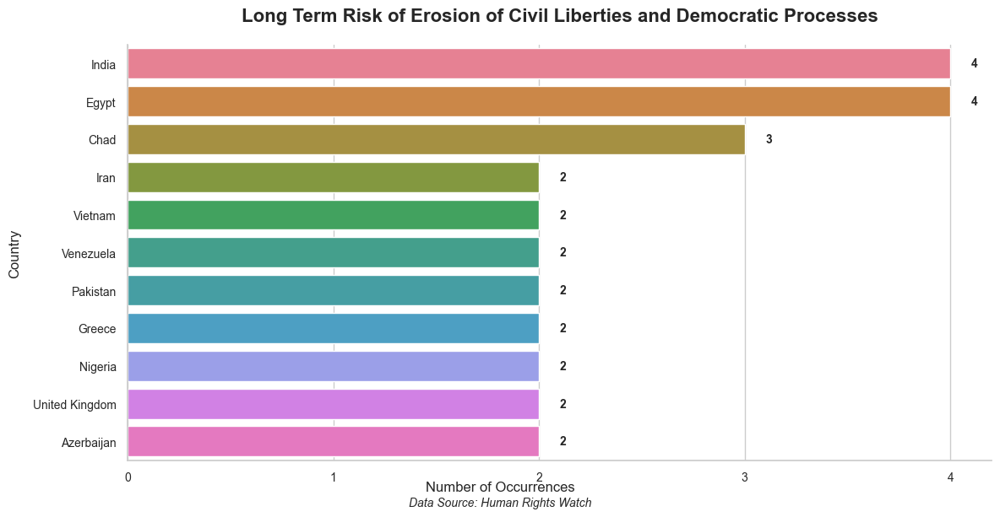
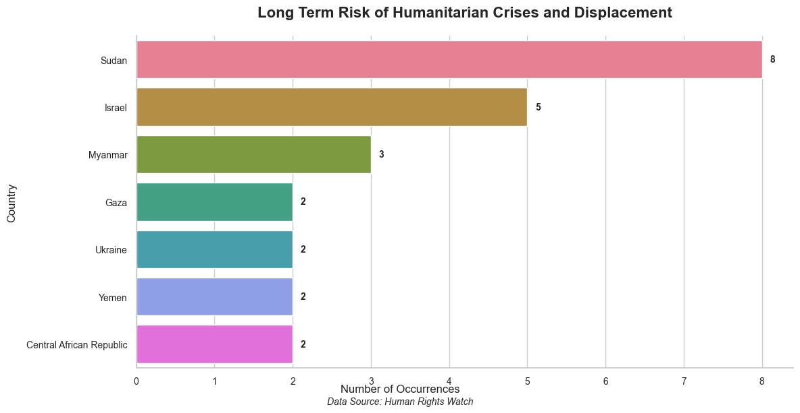
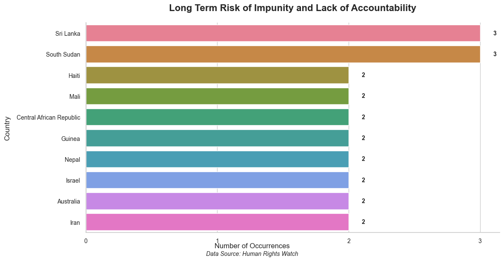
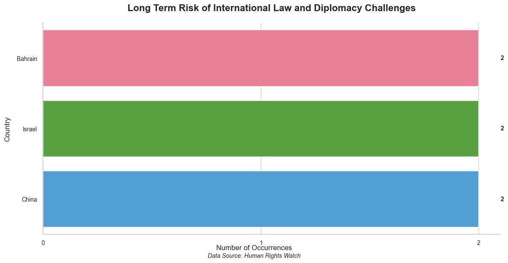
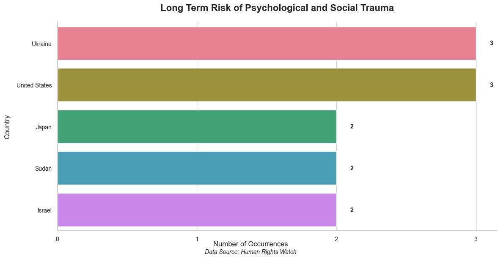
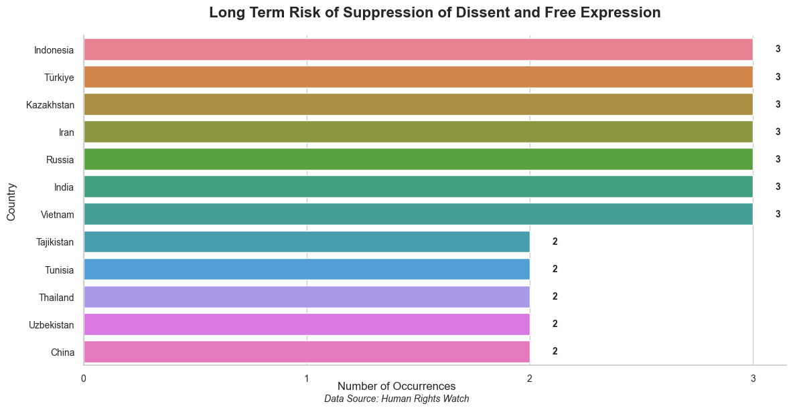
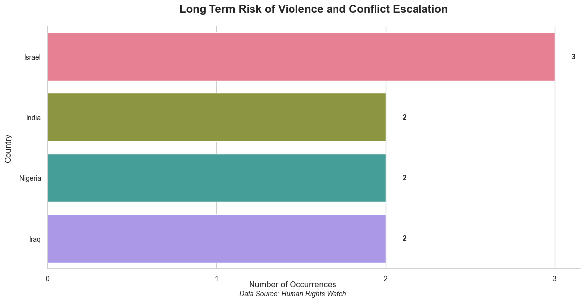

Cultural and Identity Erasure

Discrimination and Marginalization

Economic and Social Instability

Erosion of Civil Liberties and Democratic Processes

Humanitarian Crises and Displacement

Impunity and Lack of Accountability

International Law and Diplomacy Challenges

Psychological and Social Trauma

Suppression of Dissent and Free Expression

Violence and Conflict EscalationWomen's and LGBTQ+ Rights Violations